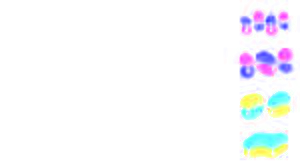

Dieni coniugati
I Dieni sono composti che contengono due doppi legami carbonio-carbonio. I Dieni possono essere divisi in tre gruppi:
coniugati: dopppi legami intervallati da un legame semplice.
1,3-Butadiene
diene coniugatocumulati o alleni: doppi legami uno dietro l'altro. I due doppi legami condividono un atomo di carbonio ibridizzato sp. Data la geometria di tale atomo di carbonio gli orbitali 2p dei carboni coinvolti nel doppio legame non si sovrappongono e non sono coniugati.
H2C=C=CH2
1,2-Propadienedieni isolatiì: dopppi legami intervallati da più legami semplici.

1,4-Pentadiene
diene isolato
Nella tabella seguente viene fornito il calore di idrogenazione per alcuni alcheni e dieni coniugati. By using these data, we can compare la stabilità relativa dei dieni coniugati ed isolati. The simplest conjugated diene is 1,3-butadiene, but because this molecule has only four carbon atoms, it has no unconjugated constitutional isomer. However, we can estimate the effect of conjugation of two double bonds in this molecule in the following way. Il calore di idrogenazione dell' 1-butene è 2127 kJ (230.3 kcal)/mol.
Una molecola di 1,3-butadiene ha due doppi legami terminali, each with the same degree of substitution as the one double bond in 1-butene; therefore, we might predict that the heat of hydrogenation of 1,3-butadiene should be 2(-127 kJ/mol) o -254 kJ (260.6 kcal)/mol. In realtà, il valore osservato per l' 1,3-butadiene è -237 kJ (256.5 kcal)/mol, un valore 17 kJ (4.1 kcal)/mol inferiore a quello stimato.

Entrambe le reazioni sono esotermiche e danno lo stesso prodotto; il composto più stabile (entalpia più bassa) rilascia meno calore durante l'idrogenazione. Si conclude che la coniugazione del doppio legame nell' 1,3-butadiene conferisce alla molecola una stabilità aggiuntiva approssimativamente di 17 kJ (4.1 kcal)/mol.
I composti contenenti doppi legami coniugati, non soltanto dieni, sono più stabili dei loro isomeri contenenti doppi legami non coniugati. Ad esempio, il 2-Cicloesenone è più stabile del suo isomero 3-Cicloesenone.
| 2-Cyclohexenone (more stable) | ⥄ |  3-Cyclohexenone 3-Cyclohexenone(less stable) |
La stabilità aggiuntiva nei dieni coniugati rispetto a quelli isolati si origina dalla delocalizzazione della densità elettronica nel diene coniugato. In two unconjugated double bonds, each pair of π electrons is localized between two carbons. In a conjugated diene, however, the four π electrons are delocalized over the set of four parallel 2p orbitals. As we have seen many times before, delocalization leads to increased stability. According to the molecular orbital model, the conjugated system of a diene is described as a set of four p molecular orbitals arising from combination of four 2p atomic orbitals. The key idea here is that in conjugated systems, the adjacent 2p orbitals overlap in space, even between the 2p orbitals on C2 and C3 in butadiene.
As a result, they all combine to produce π molecular orbitals that cover all the atoms of the conjugated system, in this case the four carbon atoms. These MOs have zero, one, two, and three nodes, respectively, as illustrated in Figure 20.2. In the ground state, all four π electrons lie in p-bonding MOs. Because the lowest two MOs are at lower energies than that of two isolated p bonds, the net heat given off by fi lling these orbitals is more than would be the case for two isolated p bonds. Note that the electrons in these fi lled MOs are delocalized over the entire p orbital system. This π electron delocalization is the hallmark of conjugated systems and can be used to explain the spectroscopy and reactivity of conjugated molecules. Finally, it is worth pointing out that in order for maximal orbital overlap to occur, the 2p orbitals must be parallel, restricting the four sp2-hybridized atoms of conjugated systems to a planar geometry.